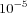

Praxis is a direct search method (for a review see [
Swann72]) that searches for the minimum of a nonlinear function without requiring (or attempting to calculate) derivatives of that function. Praxis was developed by Brent [
Brent72] after the method proposed by Powell [
Powel64]. The inspiration for Praxis was the well-known method of minimising each adjustable parameter (direction) at a time - the principal axes method. In Praxis directions are chosen that do not coincide with the principal axes, in fact if the objective function is quadratic then these will be conjugate directions, assuring a fast convergence rate.
This implementation of the Praxis method was originally written in FORTRAN at the Stanford Linear Accelerator Center (dated 3/1/73). The original FORTRAN code is available from
http://www.netlib.org/opt/praxis. The original code was translated automatically by the F2C program from AT&T Bell Labs (available at
http://www.netlib.org/f2c/). The C code was then enhanced to suite COPASI's reentrant optimization method interface.
Options for Praxis
- Tolerance
- Convergence stopping criterium: the method stops when two consecutive estimates differ by less than Tolerance. This parameter is a positive integer to determine the number of parameter sets to be drawn before the algorithm stops. The default value is .